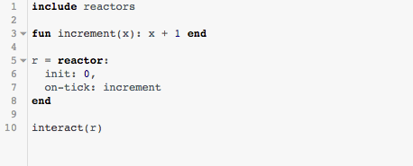

3.16 reactors
include reactors
import reactors as ...
3.16.1 Creating Reactors
Reactors are created with special syntax:
reactor: |
init: ‹expr›, |
|
on-tick: ‹expr›, |
seconds-per-tick: ‹expr› |
|
on-mouse: ‹expr›, |
on-key: ‹expr›, |
|
to-draw: ‹expr›, |
|
stop-when: ‹expr›, |
close-when-stop: ‹expr›, |
|
title: ‹expr›, |
|
end |
The behavior of the various components are described below.
Syntactically, all of the components of a reactor are optional, with the exception of init. They can also appear in any order – the order displayed above is not required. Each option can only appear once. So, for example, these are valid reactors:
reactor: init: "inert" end
fun increment(x): x + 1 end reactor: on-tick: increment, init: 10, end
fun tencrement(x): x + 10 end reactor: seconds-per-tick: 0.1, title: "Count by 10", on-tick: tencrement, init: 10, end
These are not allowed:
reactor: init: 10, init: 11, end
reactor: title: "No init", seconds-per-tick: 0.1, end
reactor: init: 10, not-a-handler: "not allowed" end
3.16.2 Configuring and Running a Reactor
While there are a number of useful operations on a reactor, the most central is interacting with one. The interact function takes a reactor as an argument starts an interactive event loop as described by the reactor’s configuration. In https://code.pyret.org, for a very simple reactor with just an initial value, the reactor’s display looks like:

Any value can be used for init, and that value will be shown by default by interact.
Each of the options below adds or configures some interactive option in the reactor.
3.16.2.1 init
Specifies the initial value for the reactor.
3.16.2.2 on-tick
The on-tick option expects to be given a function of one argument. The argument should be of the same type as the value given to init, and the function should return the same type. So for a Reactor<a>, the type of the on-tick handler is:
on-tick :: (a -> a)
This function is called every time the reactor’s clock ticks, which happens by default 28 times per second, this can be configured with seconds-per-tick. The value returned by the function becomes the new value of the reactor.

3.16.2.3 to-draw
The to-draw option expects to be given a function of one argument. The argument should be of the same type as the value given to init, and the function should return a Image. So for a Reactor<a>, the type of the to-draw handler is:
to-draw :: (a -> Image)
This function is called each time the reactor’s value changes, and is displayed instead of the reactor’s value.

3.16.2.4 on-mouse
The on-mouse handler expects to be given a function of four arguments, which describe the current reactor state and a mouse event:
on-mouse :: (a, Number, Number, String -> a)
The two numbers indicate the x and y coordinates of the mouse, and the string indicates the type of mouse event, which is one of:
"button-down" signals that the computer user has pushed a mouse button down;
"button-up" signals that the computer user has let go of a mouse button;
"drag" signals that the computer user is dragging the mouse. A dragging event occurs when the mouse moves while a mouse button is pressed.
"move" signals that the computer user has moved the mouse;
"enter" signals that the computer user has moved the mouse into the canvas area; and
"leave" signals that the computer user has moved the mouse out of the canvas area.
3.16.2.5 on-key
The on-key handler expects to be given a function of two arguments, which describe the current reactor state and a key event:
on-key :: (a, String -> a)
The string describes a single keypress. Most keys map directly to single-character strings (striking the A key produces "a", for instance). A number of special keys are encoded as longer words for ease of use:
Backspace key: "backspace"
Tab key: "tab"
Enter key: "enter"
Shift key: "shift"
Control key: "control"
Pause key: "pause"
Escape key: "escape"
Prior key: "prior"
Next key: "next"
End key: "end"
Home key: "home"
Left arrow: "left"
Up arrow: "up"
Right arrow: "right"
Down arrow: "down"
Print key: "print"
Insert key: "insert"
Delete key: "delete"
Backspace key: "backspace"
Num lock key: "numlock"
Scroll key: "scroll"
3.16.2.6 stop-when
The stop-when handler expects to be given a function of one argument. The argument is the reactor state, and it should return a Boolean:
stop-when :: (a -> Boolean)
This function is called each time the reactor changes its state. If it returns true, then the reactor stays in that state and no longer responds to stimuli like clock ticks, key presses, or mouse events. If close-when-stop is true, the window closes immediately and evaluation continues.
3.16.2.7 close-when-stop
The close-when-stop option expects to be given a Boolean.
close-when-stop :: Boolean
If it is false or not provided, the window stays open when stop-when is triggered, showing the last drawn frame. If it is true, the window is immediately closed.
3.16.2.8 seconds-per-tick
The seconds-per-tick option expects to be given a Number.
seconds-per-tick :: Number
If it is provided, the delay between calling on-tick is equal to the provided number in seconds (up to the granularity of tick events on the underlying machine). If not provided, the default delay is 1/28 seconds.
3.16.2.9 title
The title option expects to be given a String.
title :: String
The string is used instead of "reactor" in the title bar of the interaction window.
3.16.3 Reacting to Events Manually
Several functions are provided to programmatically trigger the various handlers of a reactor. This can be used to simulate an interaction for testing or exploration.
Given a reactor, returns the current value of its state.
include reactors r = reactor: init: 0, end check: get-value(r) is 0 end
Given a reactor and a single Event, produce a new reactor that results from calling the appropriate handler. Note that it does not change the state of the input reactor; a new reactor is created.
include reactors fun increment(x): x + 1 end r = reactor: init: 0, on-tick: increment, end check: get-value(r) is 0 r2 = react(r, time-tick) get-value(r2) is 1 get-value(r) is 0 end
Produces the result of calling the to-draw handler on the given reactor with its current state.
Produces the result of calling the stop-when handler on the given reactor with its current state.
Represents a single tick of the clockRepresents a key press of the given key.
Represents a mouse event at the given location of the given kind.
3.16.4 Tracing
Several functions control tracing the evaluation of a reactor to provide the history of states as data.
Evaluates the same as interact, but instead of returning the final reactor, return a Table of two columns, tick and state. The state column holds the values of all the states that the reactor held during the interaction, and the tick column numbers them.
This is equivalent to get-trace-as-table(interact(start(r))).
Similar to interact-trace, but instead of opening an interaction window, simply supplies tick events to the reactor until either the stop-when condition becomes true, or limit ticks have been processed. Useful for driving simulations without waiting for delayed tick intervals.
Returns a new reactor that is just like the input reactor, but has tracing enabled. This means on each interaction, or call to react, the current state will be saved to a list in the reactor, for later extraction with get-trace or get-trace-as-table.
Returns a new reactor with tracing disabled. This is useful for toggling a reactor back and forth between modes, since storing traces can take up lots of memory for if states are large or an interaction is long-running.
Returns a Table of the traced states of the reactor, in two columns, tick and state.